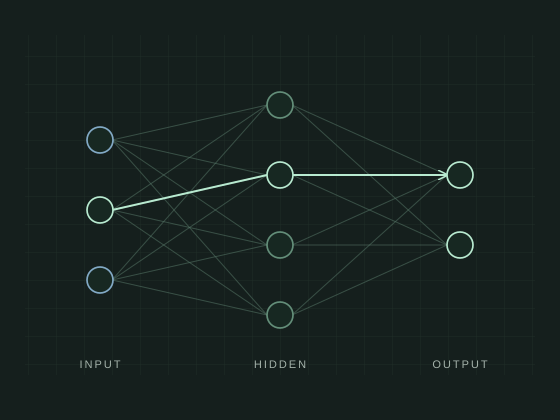

A MANIM VISUALIZATION PROJECT
Make the
abstract visible.
Agent is a visualization project for ML researchers, designed to turn a question into a precise visual explanation. Drawing on ManimML, the explanatory craft of 3Blue1Brown, and the Manim Community Gallery, we are shaping an agent that will create publication figures first, alongside GIFs and videos. The goal is simple: make the structure, intuition, and mathematics of an idea easier to see.
Explore sample visualizations01 / THE FORWARD PASSCONCEPT STUDY
